International
InternationalComentarii Notarum Tironianarum, napisy i konkurs!
2012-05-15 | autor: flamenco108W swoich poszukiwaniach nie zaniedbuję zamierzchłej przeszłości. W planach mam oddzielne opracowanie, oczywiście popularne, nie naukowe, na temat not tyrońskich, czyli pierwszej poważnej stenografii w dziejach Europy, a może i świata. Kto ciekaw, parę słów na ich temat umieściłem onegdaj w jednym z rozdziałów strony, tym o starożytnym Rzymie.
A ostatnio trafiłem na prawdziwy cymes: Comentarii Notarum Tironianarum autorstwa Wilhelma Schmitza, wydane w roku 1893 w Lipsku. Książka prawie cała po łacinie, jak przystało na omówienie niszowego zagadnienia z tego języka - po co ciekawscy mają się plątać pod nogami, skoro zrozumieć mogą to tylko Wtajemniczeni? Ale mniejsza z tym. Najciekawsza i tak jest jej druga część, a przy tym najgłówniejsza, czyli tablice stenograficzne. Można na nich obejrzeć, jak wyglądał ten system, czy nie system… No, nie system, bo podejście logiczne, pragmatyczne, matematyczne, ergonomiczne, ustępowało na rzecz czystej pamięciówki - większość wyrazów to znaczniki. Da się odnaleźć także znaczki dla form gramatycznych, przypadkiem czasem podobne do swoich brzmieniowych odpowiedników, np. -care podobnie wygląda w słowie amaricare (coś jakby “gorzknieć”, jeżeli od amaritus)
Wstawka 2021-05-25: tak sobie podczas obróbki tego wpisu pomyślałem, że amaricare z pewnością pochodzi od słowa “miłość”, czyli znaczyłoby coś jak “umiłowanie”.
i carena (doprawdy nie mam pojęcia, co by to mogło znaczyć). Zatem taki system-niesystem, ale pierwszy, powszechnie używany i to całkiem długo.
Zapragnąłem sprawdzić, czy z materiału w tej książce da się czerpać. I tak postanowiłem napisać notami tyrońskimi nazwę mojego starego blogu, z czasów budowy (i odbudowy) domu: Aedificare necesse est. Okazało się to wcale nie tak trudne. Ponieważ jestem leworęczny w pisaniu i w czytaniu, zacząłem od lewej, czyli przypadkiem od pierwszego słowa. Niestety, formy zadanej nie znalazłem, ale włączywszy przeszukiwanie po cząstkach wyrazów, snadnie znalazłem:
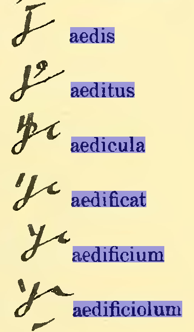
No, to już mamy na czym budować. Widać, że znaki te mają wspólną cząstkę “aedi”, przy czym mnie interesuje części “aedifi”, ale nie “ficat”. Ha, wygląda na to, że w większości zastosować, owa “ficat” to kreseczka lekko ukośna. Powtarza się w książce np. dla słowa “letificat”.
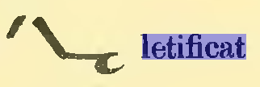
Za to patrzajcież, patrzajcież, brzuszek na końcu znaczka może być oznaczeniem owego “fi”. Żeby był odwrócony w inną stronę, nazwałbym go mądrze cedyllą, ale że jest akurat w tę - zasługuje na międzynarodowe miano ogonka.
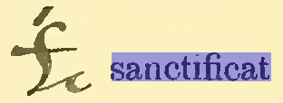
Powtarza się ów ogonek dla słowa “sanctificat”, ale, ponieważ nie jest to do końca logiczny system, a może to znaczniki-w-znacznikach, reguła ta straszy dla słów np. “iustificat”, gdzie nie widać onego brzuszka “fi”,
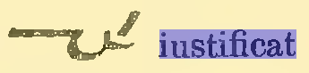
albo wręcz w ogóle wyłamuje się z szeregu, jak “laetificat”, tak podobne do zgodnego z regułą “letificat”, że aż dziw - jakie reguły kazały tak różnić się graficznie dwóm tak podobnym wyrazom,
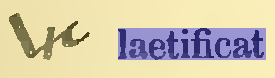
lub “glorificat”, które w ogóle nie trzyma się znalezionej przeze mnie reguły zapisu. Czyli zapewne jest wspomnianym znacznikiem wśród znaczników?
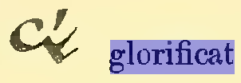
Czyli znaleźliśmy już część potrzebnego nam pierwszego wyrazu napisu Aedificare - aedifi. Powinna ona wyglądać tak:
Oczywiście ten rysunek został przeze mnie przerobiony. Nie znajdziecie takiego przykładu.
Szukamy dalej. Potrzebna nam jest cząstka “-care”, która tworzy tzw. słowa odimienne, czyli z np. rzeczownika lubo przymiotnika robi czasownik. Jak wspomniałem wyżej, znalazłem np. wyraz “amaricare":
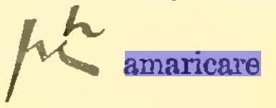
oraz “caret":
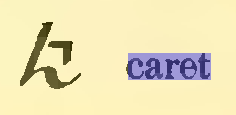
Wspólna cecha tych wyrazów jest łatwa do rozpoznania, nazwijmy ją “dzyndzlem”. Przy okazji widać, że jeżeli morfem “care” jest cząstką wyrazu, dzyndzel jest wielki, a jeżeli formą gramatyczną, dzyndzel zapisany jest jak znak diakrytyczny. A zatem pierwsze słowo nazwy i głównego motta mojego starego blogu Aedificare powinno wyglądać tak:
Jak widać, to też własnopalcnie poprawiłem
Proporcje znaków zapewne nie muszą być aż tak ściśle przestrzegane.
Pozostała druga części napisu, czyli dwa wyrazy: necesse oraz est. Z tym nie było problemu, najwyraźniej jest to związek często w łacińskich dokumentach używany, bowiem obok samotnie stojącego słowa “necesse” znalazłem frazeogram “necesse est” (który wygląda zupełnie inaczej niż samotne “necesse"), który rozwiązuje drugą część problemu, przepraszam, napisu:
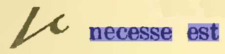
W efekcie uzyskaliśmy składkę dwóch znaków o znaczeniu Aedificare necesse est:
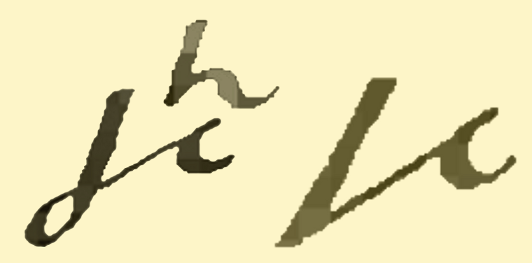
Ponieważ ten widoczek jest cokolwiek poszarpany, możemy podziwiać też wersję wykonaną w “nowoczesnym programie do rysowania” czyli w Libre Office Draw:
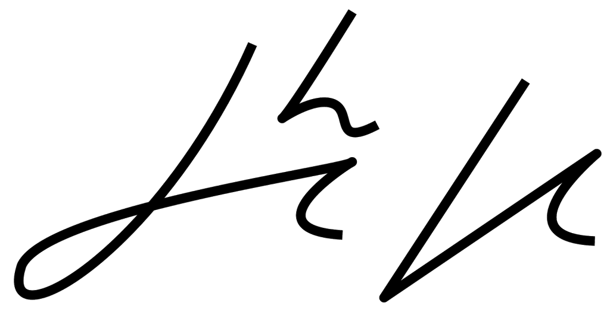
I to tyle na dziś. W następnym wpisie pokuszę się o zbudowanie takiegoż
napisu dla motta tegoż blogu, które brzmi
“
Nondum lingua suum, dextra peregit opus”.
Rozwiązania proszę
publikować w komentarzach poniżej. Termin rozwiązania: za około 2
tygodnie, po co się spieszyć.
Nagroda? Jaka nagroda? Nagrodą powinno być uczestnictwo w tym elitarnym
konkursie. Ale - oczywiście, będzie nagroda.
2012-05-15 autor: flamenco108